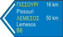

Loading...

Direction to motorway
ℹ Information Signs
📖 Description
This sign indicates the direction toward a motorway. Blue background signs in Cyprus are used exclusively for motorway guidance, helping drivers identify the correct entrance or route leading to the high‑speed road network.